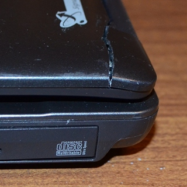

Прогресс не стоит на месте, и ноутбуки становятся легче, красивее, тоньше. Однако, улучшение этих потребительских характеристик, к сожалению, зачастую происходит за счет другого немаловажного параметра – прочности. Вместо металлических деталей производители применяют пластмассовые, петли и направляющие становятся тоньше. В итоге корпуса ноутбуков ломаются, и хозяин вынужден нести ноутбук в ремонт.
В некоторых моделях ноутбуков со временем в петлях высыхает смазка, и при открытии/закрытии крышки ноутбука появляются повышенные нагрузки на сами петли, рамку, корпус. В результате пластик начинает крошиться, появляются трещины. Если продолжать пользоваться ноутбуком, то через несколько месяцев детали не выдерживают и начинают в буквальном смысле слова рассыпаться прямо на глазах. Во избежание этого важно не доводить дело до плачевного финала, а вовремя произвести ремонт крышки ноутбука. Гораздо проще и дешевле отремонтировать корпус ноутбука, на котором только начинают появляться трещины, чем потом отливать из пластмассы большие недостающие куски, которые рассыпались на мелкие осколки.

Другой неприятный случай – хозяин уронил ноутбук, и в корпусе возникла трещина или откололся кусок. В любом случае неизбежен ремонт корпуса ноутбука.
Можно, конечно, попытаться разобрать ноутбук и склеить разломанные детали суперклеем или эпоксидкой, но такой ремонт обычно ненадежен и через какое-то время корпус все-таки «рассыпается». А ремонтировать его потом гораздо сложнее из-за того, что приходится сначала удалять остатки старого клея./h3>
Специалисты укрепляют проблемные места, армируя их металлической сеткой, применяя для склеивания самые качественные составы клея. Некоторые отсутствующие элементы мы отливаем из пластмассы заново.